Whisper tiny — speech recognition, encoder–decoder, two
inputs. 37,184,640 parameters over 271 traced operations, log-mel spectrogram
to vocabulary logits. The six attention heads are drawn as lanes because this model
writes q, k and v out rather than calling nn.MultiheadAttention, which
fuses into a single traced node and takes its heads with it. Decoder block one is
opened; the remaining three are one box, and repeat counted them by
tiling that opened unit against the traced nodes. Its 1,647 units put detail type
at about 8px here against the page's 17px, and it clears a 6pt floor at 14.5
inches — a slide or a poster, not a column. Below laptop width it stops shrinking and
scrolls sideways at its own size instead; tap it to open the SVG on its own,
where the browser's zoom is vector and there is no floor at all.
draughtsman
The tracer supplies the facts. An agent supplies the judgement — which operations to collapse into a stage and what to call it. It never supplies a number: every quantity in the figure is looked up from a trace of your model at render time.
A coverage check then proves no traced operation was silently dropped.
OpenAI's speech recogniser at its published dimensions, written out in PyTorch from the model card and traced from that source: 80 mel bins, four encoder blocks against four decoder blocks, six heads, sinusoidal audio positions against learned text positions, cross-attention in every decoder block, and the output projection tied to the token embedding. The weights are random — this draws the architecture, not the trained model. It is the only encoder–decoder in the gallery, and it is the reason two parts of the tool are what they are.
trace took one input. It built a single dummy tensor,
so every encoder–decoder, two-tower and masked model was excluded — not by
difficulty, by signature. Whisper's forward wants the mel spectrogram
and the token ids together. --input-shape now repeats, with an optional
--dtype per input, and one shape still produces byte-identical output.
A model with several inputs has no singular input shape, so a spec asking for one
raises rather than quietly describing half the input.
A tied weight was charged twice.
Whisper's output projection is its token embedding — one tensor reached
through two prim::GetAttr nodes, both billed — and the trace reported
the model as having 54% more parameters than it has. Coverage was green throughout:
every node sat in exactly one stage, and the figure would have printed a total this
model does not have. A parameter is now charged to the earliest substantive consumer,
which also decides where it is drawn: the 19.9M-entry table appears at the embedding,
where a reader meets it, rather than at a matmul four hundred nodes later.
A box with numbers in it is what a tracer already gives you. The one thing only this tool asserts is that the area on the page is the tensor's own axes, resolved from the trace at render time — so a stage whose content is a tensor is drawn as one, and the box comes off.
sheets and chrome: none together. Six
channels can be counted, so six sheets are drawn. Sixteen cannot, so it becomes one
solid of the same depth carrying its number, and the stage is the tensor rather
than a box with a small mark inside it. The key names the scale — square root here,
and it says so. Solved to print at 6 inches — 8.74pt type.
The same fields on a model with real spatial extent, and the
clearest instance of the claim in this repository: one scale across the whole
figure, so equal values draw equal lengths. The face is the spatial map and the
depth is the channel count — the pyramid is visible as area rather than stated as
a number, and where a stack is too deep to separate it becomes one solid carrying
its count. scale: linear, and the key says so. Its 1,607 units put
detail type at about 8px here.
torchview 0.2.7 on the same build_whisper_tiny, called the way its
own documentation calls it: draw_graph(model, input_data=[mel, tokens]),
depth left at the default. Nothing in it is wrong. Seventy-four
boxes, ninety-six edges, every operation carrying its real shapes. It is
547 × 4,896 points, and there is no page that goes on.
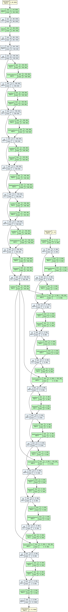
torchview 0.2.7, at 1:1 — committed at 2× density, so a zoom reads rather than blurs. The window holds about a twelfth of it.
draughtsman, the figure at the top of this page, in a window of exactly the same size. 335px of figure in 418px of window: the space under it is empty because the figure has ended.
The same two views on one axis. Every stage is drawn around
the nodes it covers, at torchview's own scale, so the heights are the claim:
audio encoder is 24 boxes tall and ×3 is 27. The figure
is 520 × 1,730 — scroll it, or open it on its own.
Asked for the depth draughtsman covers, torchview gives 234 boxes at 2,088 × 14,688 pixels. Neither number is a criticism of it — tracing is the half that can be mechanised, and it is the half this project takes from a tracer too. What it adds is the other half: an agent decides the grouping and the names, and a coverage check then proves no traced operation went missing while it did.
Every node, shape and parameter count, from the model.
The agent groups and names. It writes no numbers.
Deterministic SVG. Quantities read back by node id.
Everything below is a field in spec.json — judgement, committed, and
the same on any machine. None of it is a render-time flag, because a figure that
comes out differently depending on who ran it cannot be checked against the model.
glyphOne axis tall, another wide, both from the same shape, so the area the eye
reads is a real product. block is one rectangle;
marks draws the axes as countable objects and turns to a labelled
bar past about thirty, where counting stops; sheets takes a third
axis and stacks it, and is the only style that may. scale chooses
sqrt or the faithful linear, and the key names which.
chromeA box is right when a stage's content is words. It is wrong when the content
is a drawing of the tensor: you get a rectangle around a rectangle competing
for the same reading, and the eye settles on the larger. chrome
set to none lets the tensor be the stage, and the colour family
moves onto the glyph.
lanes, repeatlanes names the channels of a bank the agent chose to draw as
parallel, and check asserts there are exactly as many labels as
the model has channels. repeat names the stages that draw one unit
and draughtsman counts how many times they tile against the traced nodes — so a
repetition the graph does not contain fails rather than draws.
edgesA label, a dashed style for an identity or a skip, and
untraced — an arrow the trace does not contain, drawn anyway with
a written reason. A reader wants a sampled latent to depend on its mean and
variance; the trace records only the shape read. That reason lands in a diff
instead of in nobody's head.
orientation, wrapDepth otherwise converts straight into width, which is the ribbon this page
criticises other tools for. wrap breaks the spine into rows at a
stated width, and a break is refused where a long edge is still in flight — so
a net whose skips span its whole depth barely wraps, which is the honest answer
rather than a row break drawn through a skip.
metersA quantity drawn as a bar rather than read as digits. The value is a reference the renderer resolves, never a number the agent typed. The label is also the series: every bar sharing one is drawn on a single scale across the figure, and bars in different series are never comparable, because parameters and frames have no common unit.
legendOne row per colour family actually drawn, each carrying its share of the traced operations and parameters — counted off the graph, not off the picture. Colour cannot carry proportion when a box is a collapsed stage rather than a layer, so the legend answers how much of this model is convolution as a fact instead of an impression. Off by default.
outputwidth states the size the figure will be printed at and
min_type the type it must hold there. Layout solves against that
budget, and check refuses a figure whose smallest type would land
under the floor — naming the number, and how much narrower it would have to be.
The type is the one thing that never gives.
--iconAt a card or tile size no type survives at any point size, so the honest
response is not a smaller floor but no text. render --icon WxH
removes what cannot be read — labels, key, sub-pixel detail, any stage that was
only text, and the arrows into it — and crops to what is left. It never crops to
fill, because a cropped net is a net with a stage missing at the one size where
nobody can tell. Every model as a mark, below.
elided, batch_axis,
constantsA dropped node needs a written reason, so the loss is a decision in a diff.
batch_axis declares which axis to stop drawing, and
check refuses the declaration wherever the hidden number is not 1.
constants is required before a spec may quote a traced constant
the tracer warned it had baked out of a tensor.
Each of these is render --icon 192x96 against the same committed spec
that draws the figure above it — one by two inches, shown here at actual size. Nothing
is hand-placed and nothing is redrawn: a mark is the figure with everything unreadable
taken out.
Three of them work. --icon prints the scale it drew
at, and that number predicts the verdict. The tool calls a mark readable at 0.25× and
up and noise below 0.19×, with the pair between marked marginal — and both boundaries
sit in the middle of a real gap in the measurements rather than against the nearest
one. That is the whole reason they are those numbers: the readable marks stop at
0.2975× and the marginal pair starts at 0.2114×, which is 0.086 of empty range to put
a line through.
It used to print that number and throw it away, so a mark nobody could see shipped as quietly as one anybody could. It now says which band it landed in and warns when that is not the top one. It is a warning and not a refusal, because seven of the ten here are under the line and ship anyway — a gate that fails most of its own corpus is one somebody turns off.
The first attempt at those bands was wrong, and the way it was wrong is
the reason this page exists. They were set at 0.30× and 0.20× — read off a
contact sheet that prints the scale to two places. lstm prints as
0.30× and is really 0.2975, so the boundary put the lowest mark anyone
had confirmed readable on the wrong side of its own line, by 0.0025. Every model
still rendered and nothing said a word. Rounding a number for a person to read and
thresholding it for a machine to decide are different jobs, and one value doing both
silently does the second one badly.
Nothing re-rendered a committed mark either, until now.
tube's moved from 0.15× to 0.20× when its wrap changed for
the banner further up this page — a mark crossing a band because of an edit aimed
somewhere else — and a person caught it against that same contact sheet. CI now
re-renders every committed mark and reads the slot back out of the file, so a mark
states the size it was fitted to and the check needs no constant of its own.
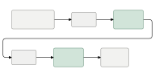
mlp 0.40× reads
Reads, and says nothing. Boxes and arrows — nothing in it identifies the tool that drew it.
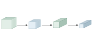
lenet 0.39× reads
The best mark here, and the only one that is not plain rectangles.
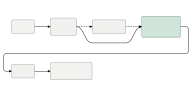
lstm 0.30× reads
Reads, slightly busy where the wrapped return crosses back.
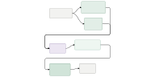
dual 0.21× marginal
Legible with nothing near it. The merge is already soft.
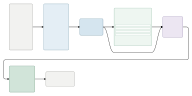
tube 0.20× marginal
The model in the banner above, and it does not survive the shrink.
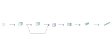
resnet 0.17× does not read
Flecks and hairlines.
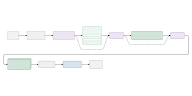
transformer 0.15× does not read
Flecks and hairlines.
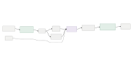
vae 0.14× does not read
Flecks and hairlines.
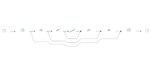
unet 0.12× does not read
Dirt on the glass.
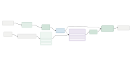
whisper 0.11× does not read
The figure this page opens with, and the lowest mark in the set: at 0.11× none of it survives.
LeNet wins because it loses the most. Its figure has nine stages and its mark keeps four: the image, the flatten, both dense layers and the class logits draw only text, so they go with the text. What is left reads as a bare conv stack and gives no hint the classifier head was ever there. That is a real loss of information, and it is exactly why the mark works — four large glyphs instead of nine cramped ones. As a figure it is wrong; as a mark it is the best of them. It is going on a card, so it is a mark.
One stated limit. --icon
post-processes a rendered figure rather than re-solving the layout without labels,
so boxes still carry the size of text nobody is drawing. The boxed nets pay for it
and the glyph nets come out tight.
lanes and repeat, and the reason
wrap exists. The agent named the unit; draughtsman tiled it against
the traced nodes and counted. Its 1,277 units put detail type at about 10px
here, and holding the page's body size would take 2,285px — the ribbon problem
stated as a number rather than complained about. It declares no print width at
all, because at this width there is none that clears the floor.
Coverage asks whether an operation was dropped. Each of these asks something else, and each exists because a figure was wrong while coverage was green: an arrow the trace does not contain, a tied weight counted twice, a repeat count nobody verified, a glyph whose axes come from different tensors, a name painted over its own drawing, type too small to read at the size it will be printed, and an arrow whose path runs through a stage it has nothing to do with.
The last one was found by looking. A figure in this gallery drew one branch's
output straight through the other branch on its way to a concatenate, and there is
no such path in the trace — the confident-and-wrong figure this project convicts
other tools of, in its own examples. Coverage was green, the type cleared its floor,
and the committed SVG was exactly what the spec produced. Nothing had ever asked
where an edge's own path goes. tools/edge_collisions.py is that look,
mechanised.
A green check says no operation was dropped. It says nothing about whether the
names are good, the grouping natural or the figure legible — and check
ends by saying so, so a green check is never read as a good figure.
draughtsman ui is where a person does the other half: the figure, the
coverage panel and every traced node in one place, the grouping editable, the picture
redrawing as you change it.
Point it at a directory and All models renders every figure onto one
sheet with its coverage state and aspect ratio — a layout defect in one model of many
does not announce itself in a passing check, and opening a tab per model to find it is
how it stays unfound. Every picture it shows comes from the same render()
the CLI calls, so the figure you judge is the figure that ships.
How each model might break the tool was written down before it was traced. Whisper
did, twice over — the two findings at the top of this page — and what they cost is in
DECISIONS.md, which is the most useful file here. Every model is written out in full in the repository — no
torchvision, no downloads, no pinned third-party version — with the
graph.json it was measured from and the spec.json that
arranged it, so the whole pipeline reproduces from a clone.
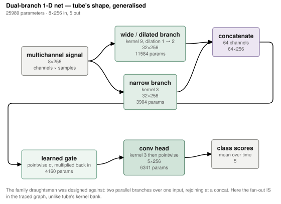
25,989 parameters. Solved to print at 6 inches — 8.92pt type, so it stays readable in a double column. This is the figure the edge check was written against.
{kind=link}
{kind=link}
{kind=link}
{kind=link}
{kind=link}
{kind=link}